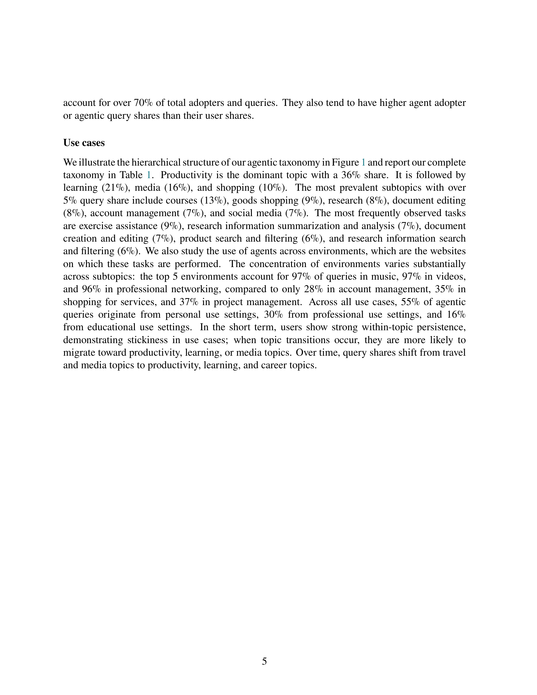

Figure 1
범용 AI 에이전트의 채택(adoption)과 사용(usage) 패턴을 대규모 현장 데이터로 실증 분석한 최초의 연구이다. Perplexity가 개발한 AI 브라우저 Comet과 그 내장 에이전트 Comet Assistant의 수억 건 익명화된 사용자 상호작용 데이터를 분석하여, "누가 AI 에이전트를 쓰는가?", "얼마나 집중적으로 쓰는가?", "무엇에 쓰는가?"라는 세 가지 근본적 질문에 답한다. 에이전트 사용 사례를 체계화하는 계층적 분류 체계(Agentic Taxonomy)를 새로 제안한 것이 핵심 기여이다.
2025년은 "에이전틱 AI의 해"로 불리며, AI가 대화형 챗봇에서 행동 지향적 에이전트로 전환하고 있다. 그러나 실제 사용자들이 범용 AI 에이전트를 어떻게 채택하고 사용하는지에 대한 체계적 행동 증거는 거의 없었다. 기존 연구는 비대표적 기업 설문이나 코딩 에이전트 같은 특화 에이전트에 한정되었다. Comet이라는 실제 상용 제품의 대규모 데이터를 통해 이 공백을 메우고자 했다.
6. 환경(웹사이트) 집중도: docs.google.com(12%), 이메일 서비스(11%), linkedin.com(9%)이 상위 환경. 서브토픽별 집중도 편차가 큼(음악 97% vs 계정관리 28%)
총평: Perplexity Comet의 실제 사용 데이터로 AI 연구 에이전트 도입 패턴을 분석한 최초의 대규모 실증 연구로 현장 통찰이 풍부하다.